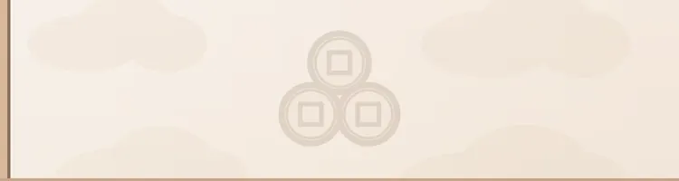

今日剩餘問事次數：2
1．問事類別
2．起卦方式
0／120
不知道怎麼問？點一題帶入
一事一占：同一件事搖出就定案，不重搖。想清楚、靜下心再開始。
先停一下，好好照顧自己
你寫下的內容讓人有點擔心。這樣的心事不適合用占卦處理，先找人聊聊會更好，這些專線都有人在聽：
我想找人聊聊（撥打 1925）若有立即危險，請撥 119 或 110。本次不會起卦，也不扣次數。
僅供娛樂與自我反思，非專業建議。本服務適合滿 18 歲使用者。
手動搖卦
背＝陽、字＝陰；由下往上共搖六次。
問事紀錄
紀錄只存在這台裝置的瀏覽器裡，最多保留 50 筆。
使用說明
怎麼用
- 選類別、寫下一件具體的心事。
- 自動起卦：由程式以安全亂數模擬三枚銅錢，由下往上連擲六次。
- 手動搖卦：自己點六次，每次擲三枚銅錢。中途返回不扣次數。
- 看結果：本卦／變卦盤面、經文、白話短註、吉凶傾向與用神提示。
一事一占
同一件事搖出就定案，不重搖、不追問。若心裡還有疑惑，請先沉澱，改天換個角度再問。
次數與資料
- 每天可問 2 次，完成一次問事才扣 1 次；台北時間 00:00 重置。
- 次數與紀錄只存在本機瀏覽器（localStorage），不會上傳。
- 清除瀏覽器網站資料、使用無痕視窗或換手機，次數與紀錄都會不見。
起卦與排盤規則
- 銅錢：背＝陽、字＝陰。三背＝老陽 9（動）、二背一字＝少陰 8、一背二字＝少陽 7、三字＝老陰 6（動）。
- 動爻陰陽互換得變卦；無動爻則無變卦。
- 京房八宮定宮、世應，納甲裝干支；六親以本宮五行為我，變卦也沿用本宮五行。
- 日柱約定：以 2000/01/01 為戊午日，依公曆逐日推算；以台北時間午夜換日，第一版不另切子時（23:00 後仍算當日）。
- 六神依日干自初爻起排；旬空依日柱所在甲旬標示。
- 第一版不排伏神、月建、旺衰。
經文出處
卦辭、爻辭為公有領域《周易》經文，依通行本整理，底本為維基文庫《周易》（zh.wikisource.org），2026/11/23 擷取並逐字比對；維基文庫以「另」標註的異文處採通行本用字，混入的簡體字改回繁體，「噬腊肉」採通行本（底本作「昔」）。白話短註為本站自行撰寫，僅供反思參考。
其他術數（八字、紫微、奇門、合婚、風水、塔羅）
- 不限次數、不存紀錄，結果只在本機計算；需要保留請自行截圖。
- 八字：年柱以立春精確時刻、月柱以十二節精確時刻分界；23:00 起算次日（夜子時）；起運以三天折一年。時辰未知只排三柱。
- 紫微：必須有時辰；23:00 後預設算次日子時，閏月預設十五日以前按本月、十六日起按下月，兩者都可在進階選項改。
- 奇門：時家轉盤、拆補法；只排盤和標示，不自動論吉凶。
- 合婚：只對照干支與五行，不打分數（參考資料沒有可重現的計分細則）。
- 風水：玄空飛星（1864 年起每 20 年一運，以立春分年）與八宅；不自動論斷，平面圖判讀即將推出。
- 塔羅：78 張牌依牌陣不重複抽出；同一個種子與牌陣可重現同一組牌。
- 時間一律以台北時間（UTC+8）鐘錶時間計算，不做真太陽時。
- 曆法：1901–2099 年的閏月與香港天文台《公曆與農曆日期對照表》逐年一致；逐日比對只有 2057 年九月差一天（各家曆算本身的差異），另有 6 個節氣的交節時刻離午夜不到 12 分鐘、兩邊歸到不同日。
我的資料與匯出
出生資料可在表單上「存為我的資料」，之後一鍵帶入（最多 10 筆）。所有資料只存在這台裝置。
圖片與字型來源
- 塔羅牌面：Pamela Colman Smith 1909 原畫（公有領域）。掃描整理：Saskia Jansen，經 Wikimedia Commons 取得。
- 牌背、分頁圖示、橫幅、羅盤與卦象裝飾、網站圖示、銅錢圖：心訴原創繪製。
- 主標字：Canva 文字元素，楷書。
- 內文字型：霞鶩文楷 TC（SIL Open Font License）。缺字「稊」「胏」取自思源宋體（SIL Open Font License，1.1 版），內嵌補字字型已更名為 Xinsu Supplement。
- 背景音樂：瀏覽器即時合成，沒有使用外部音樂檔。
使用的程式庫與授權
- lunar-javascript v1.7.8：作者 6tail，MIT 授權（曆法、節氣、干支）。
- html-to-image v1.11.13：作者 bubkoo（W.Y.），MIT 授權（存成圖片）。
- iztro v2.6.5：作者 SylarLong 與貢獻者，MIT 授權（紫微斗數排盤；內含 lunar-lite、i18next、dayjs 等 MIT 授權元件；本站重新打包為共用 lunar-javascript，輸出經 1,500 組命盤比對與原版相同）。
程式庫原始授權標頭保留在對應的程式檔內。
年齡與免責
本服務適合滿 18 歲使用者。內容僅供娛樂與自我反思，非專業建議，不保證準確，不能取代醫療、法律、財務、心理等專業意見。健康問題請找醫師。
排盤自檢
用標準卦（乾、姤、泰、未濟、晉、大有等）檢查六爻排盤，並跑八字、曆法、紫微、奇門、風水、塔羅的驗算範例。
心訴 多術數版 v1.2